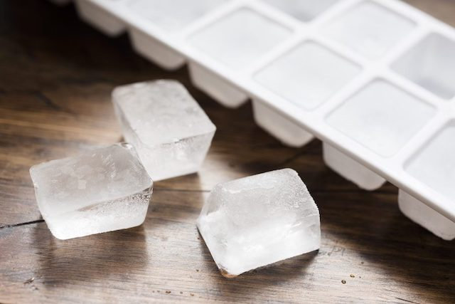

Ice Cubes

Description
They're cold, they're crunchy, and they can
chill a beverage. No freezer is complete
without ice cubes in it!
Ingredients
Steps
- Begin with an empty ice cube tray
- Fill it with water from your sink
- While holding the tray, wonder about
the quality of your tap water
- Begin to worry about the prevalence of
microplastics in the world today,
as well as the negative health
consequences of ingesting them
- Consider buying an expensive water
filtration system
- Realize that filtration system would likely
have plastic components, too
- Decide that you'll just try not to think too
much about it
- Place the filled ice cube tray in the freezer
- After three to four hours, enjoy your ice cubes!